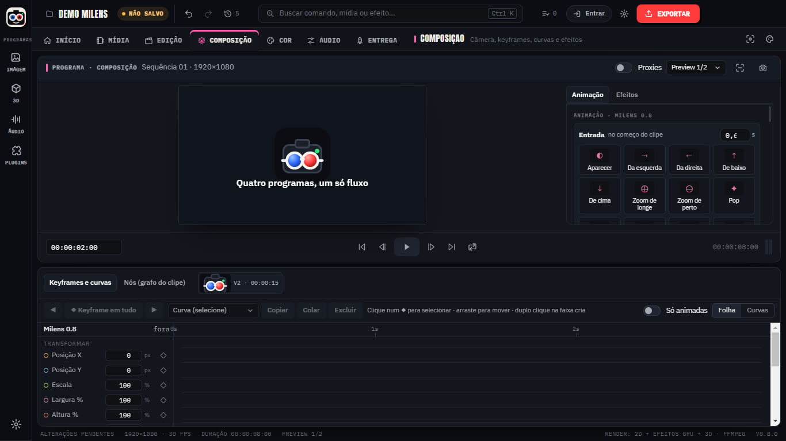
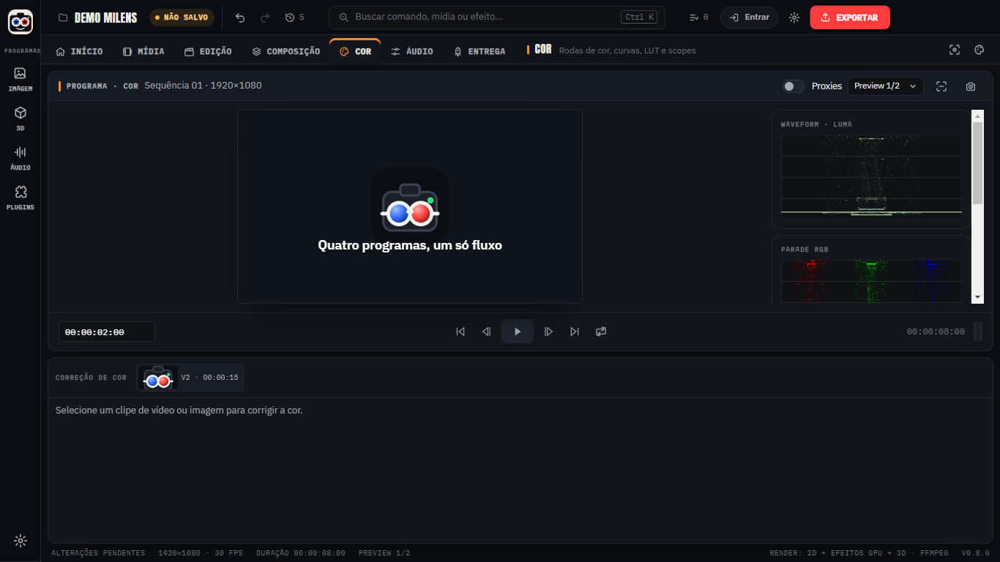
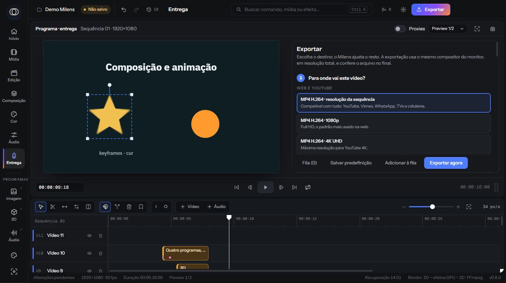

Timeline precisa
Corte, ripple, slip, ponto de entrada e saída, ímã e trilhas travadas. Proxies automáticos para 4K.
A mesa principal do Milens: timeline com 64 trilhas, câmera virtual, keyframes, cor com scopes e fila de exportação. Grátis no Lite até 1080p.

Corte, ripple, slip, ponto de entrada e saída, ímã e trilhas travadas. Proxies automáticos para 4K.
Posição, zoom, inclinação e rolagem com keyframes, profundidade de campo e desfoque de movimento.
Editor de curvas com easing, presets e cópia entre clipes. Animação por texto, imagem e forma.
Rodas de cor, curvas, LUT (PRO), chroma key (PRO) e scopes: waveform, vetorscópio e histograma.
Saída em tela cheia na segunda tela, para ver o resultado enquanto edita.
Exporta H.264; no PRO também HEVC, ProRes 422 HQ, VP9 e GIF. Áudio normalizado em LUFS.



Crie uma conta, baixe o Lite e edite o primeiro projeto em minutos. O PRO fica a uma chave de distância.
Windows 10 ou 11 · 64 bits · instalador de 118 MB